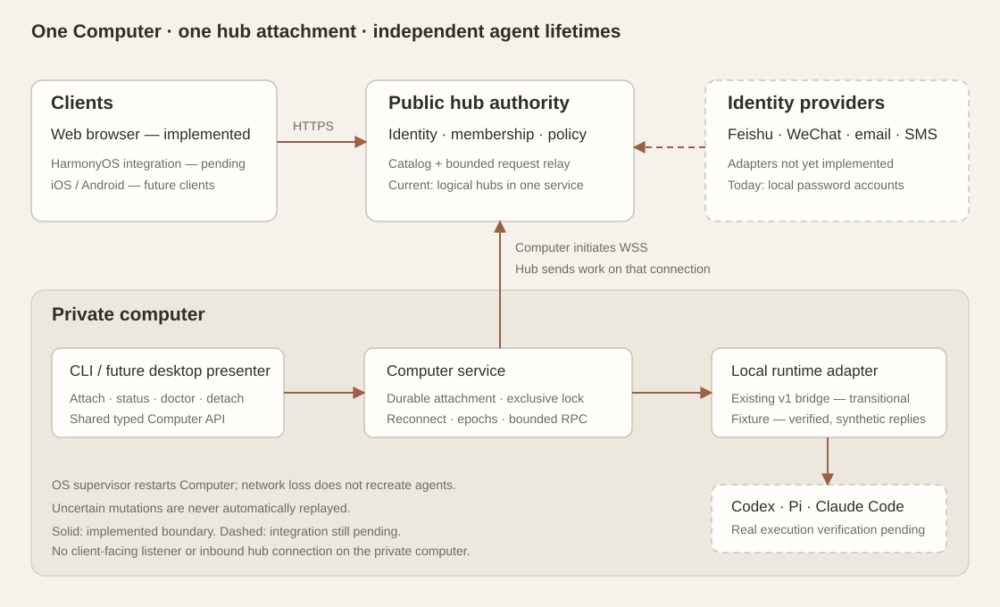

Codoxear v2 / October 2026 / development implementation
Architecture update: Independent hubs and local identities supersedes the mandatory central account service and browser gateway described below.
A Computer product with a durable local runtime boundary.
This TypeScript project lives inside the existing repository, beside
codoxear/. It implements independent hubs with local authentication, a static web client with locally saved hub credentials, a resident Computer API and CLI, bounded streaming, and the agreed ownership and access rules. It is
not yet a replacement for every v1 feature.
Running demo contract and function-by-function No-Go register
Verified scope: 85 automated Docker tests plus 1,983 legacy tests and 112 legacy subtests, 29 two-account, identity and two-hub Chromium checkpoints, and a separate-network test with verified TLS. An installed Pi CLI executes an actual shell tool during a hub outage, then its browser conversation reconnects without replay. The model endpoint in that test is scripted. Live provider login, model inference and physical-device delivery are separate, unpassed gates. See the full acceptance checklist.

The hub remains in the communication path. Mobile clients never dial the
computer’s private address.
Remote drafts are stored on the Computer by account, attachment and session. They do not use the shared legacy draft store. Browser checks prove that two users sharing one agent keep separate unsent text. Owner-confirmed deletion removes the local session and then its hub entry; unconfirmed replies retain the entry for review. The queue shows why a prompt is paused; a live read-only policy change disables sending while preserving the transcript.
What follows Raft Computer
The reference is
Botiverse’s Computer package at commit 05f7d8f, particularly its public library API, attachment flow and resident
service. This is an independent implementation; no Raft implementation
code was copied. Raft also has internal daemon workers: the useful
distinction is its product and lifecycle boundary.
Typed local API
createComputerApi(home) owns attach, detach, status,
doctor and service construction. The CLI calls this API. A future
desktop presenter can use it without parsing shell output.
Durable attachment
A private local file binds one computer identity to one hub. Changing
hubs requires explicit detach. A live service excludes attachment
mutations through an exclusive lock.
Independent lifetimes
The resident service reconnects with bounded backoff. Its local
runtime survives network loss. The transitional bridge leaves existing
agent process ownership with v1.
Unlike Raft’s multi-server service reconciliation, this project enforces
your one-hub-per-computer rule. It does not yet reproduce Raft’s desktop
application, installers or child-worker supervision. A Linux user-service
example is included in deploy/; it has not been installed or
verified under systemd.
Authority and access
-
Every hub and computer has exactly one human owner. Ownership can differ
between a hub and its computers.
-
Each resource’s owner controls its invitations, membership and policy.
Owning a hub does not implicitly grant agent access on someone else’s
computer.
-
Creating an agent requires active hub membership and computer operator
access. Viewers can read.
-
After computer membership removal, an explicit hub rule overrides the
computer rule. If neither is set, access defaults to none.
-
Retain and read-only apply only to concrete agents previously accessible
at removal. They grant neither future agents nor creation rights.
-
Current hub membership remains required, even with retained computer
grants. This is the narrower interpretation identified in the design; it
is not an additional form of retained hub access.
-
Open streams re-check access before returning data. Policy changes also
update the browser’s available controls.
Implementation status
Verification and reproduction
Run from this directory with Docker available. The container installs
dependencies, builds, runs the behavioral tests, starts an isolated
fixture hub, and drives Chromium through the interface. It publishes no
host port.
npm run verify:docker
Build-only checks can run locally:
npm ci
npm run build:backend
The web frontend is independently installable and buildable from
frontend/: run npm ci, then
npm run build; use npm start there to serve it.
Its source is in frontend/web/, and HarmonyOS source is in
frontend/harmonyos/. The root npm run build
coordinates backend and frontend builds. The browser uses frontend-owned
API DTOs and does not import backend implementation from root
src/. Package/build separation is documented here; current
behavioral isolation evidence is pending.
The current environment’s system Docker socket was unavailable.
Verification used a separate user-owned Docker daemon in private PID,
mount, user and network namespaces. The hub and browser ran in separate
containers sharing that isolated network; Computer children ran in the
browser container. A separate front/private-network experiment also proves client isolation and verified TLS. These checks do not prove public-Internet deployment or production load tolerance. A Chromium 130 executable already
available in the environment was used. The supplied standard Dockerfile is
a reproduction recipe; that exact image build has not been run here.
Open the generated browser evidence and test results. The evidence directory is intentionally excluded from version control.
The default recipe runs baseline, account-portal and independent-hub browser suites. scripts/real-runtime.ts additionally requires the installed Pi CLI and native TypeScript runtime; scripts/network-fixture.ts requires separate Docker networks.
behavioral tests are in tests/.
Computer commands
Download the private configuration from “Add computer”, copy it to that
computer, then use:
npm run computer -- attach /private/path/codoxear-computer.json
npm run computer -- start
npm run computer -- status
npm run computer -- doctor
start runs in the foreground for an OS supervisor. Stop that
exact service before detach; detaching removes the local
attachment, so also revoke the old credential at its hub before
reassignment. The configuration contains credentials and must stay
private. The default home is
~/.local/share/codoxear-v2/computer; set
CODOXEAR_COMPUTER_HOME to choose another.
The legacy runtime requires an explicit loopback URL, password and
absolute workspace path. It launches once, then resolves the broker PID
through session discovery. Discovery timeouts remain unknown outcomes and
must be reconciled before trying another launch. Use Check launch result in the hub to read the Computer’s durable receipt. This never starts another process; absent receipts still require explicit local inspection/import. The synthetic runtime is
for isolated verification only.
Independent hub and client setup
Each hub owns its authentication, signing key, permissions and database. Start from the independent hub configuration, choose an exact HTTPS origin, replace the OTP secret, and register each allowed static client origin and exact callback. Keep this file private. Paths are relative to the process working directory.
CODOXEAR_HUB_CONFIG=/private/hub.json npm run hub
On first start only, also supply CODOXEAR_BOOTSTRAP_EMAIL and CODOXEAR_BOOTSTRAP_PASSWORD (at least 12 characters) through the process environment. Put an HTTPS reverse proxy in front of the loopback listener with WebSocket upgrades and streaming enabled. Operators with different trust boundaries must use different hostnames, not only different ports.
npm run client
The optional client process serves static files on loopback port 19520. It has no account database or API proxy. Open its HTTPS origin and use Hubs & computers → Connect hub. Passwords and configured providers authenticate at each hub; the client saves hub-scoped credentials locally. Add a Computer and use its pairing code with the Computer CLI. Computers initiate outbound WSS and never require a client connection to their private address.
Harmony push may be enabled using a private harmonyServiceAccount configuration. Native login, OS credential storage and physical-device parity still require acceptance; see the current design and No-Go register. Shared-authority deployment is retained only as an explicitly selected legacy mode (independent: false); it is not required by this architecture.
Agent creation
The v2 creation form separates Runtime, Provider, and Model for Pi, Codex, and Claude Code. Model choices come from the selected Computer; custom model IDs, reasoning, supported Fast mode, and a working directory are available. See the design and verification notes.
Invitations and agent sharing
Invite hub and Computer members by email, verified phone, or an exact Feishu/WeChat/provider identity. Computer owners can share one agent with a hub member as Viewer or Operator independently of Computer membership. See the workflow and local verification evidence.
Migration boundary
Keep v1 running while each runtime capability moves behind a typed
Computer adapter. Preserve terminal-owned session behavior. Add native
authentication, notifications and file transfers only after their server
contracts and revocation rules are implemented. The first release gate for
replacing v1 is a real-CLI browser run covering creation, resume, send,
interrupt, files, queues and reconnects on each supported backend.
Full target design and acceptance gates
·
Ownership and policy design
IPv6 demo deployment
The public demo uses the existing DNS name codoxear.gzeek.com: guide on HTTPS port 8444, static client on 8445, and independent hubs on 8446 and 8447. Computers establish outbound TLS connections to their hub. Browser and Computer traffic passes through a separate Caddy service, with secure cookies and private demo credentials. The guide's credential endpoint is disabled in public mode.
Build and run the committed snapshot in the isolated Docker environment. Set CODOXEAR_DEMO_PUBLIC_HOST=codoxear.gzeek.com, use a fresh private data directory, map that name to 127.0.0.1 inside Docker, and run scripts/start-public-demo.mjs. The paired demo-tls-bridge.mjs host forwards encrypted traffic from the isolated network to the host gateway; demo-forward.mjs carries gateway requests to the private container sockets. Both use the private shared bridge directory. The generated, ignored .data/demo-environment.json records the exact container, snapshot, paths and owned process IDs; node scripts/demo-control.mjs start|stop|status manages them.
Public access No-Go: the existing Cloudflare DNS credential is root-readable, and HTTP/TLS-ALPN certificate validation could not reach ports 80 or 443. A host administrator must run sh deploy/install-demo-https.sh from the committed snapshot. This installs only codoxear-v2-demo-https.service and its configuration, reusing the existing protected credential without copying it into the repository. It does not restart the current gateway or backend. Certificate issuance and external access to ports 8444–8447 must succeed before the public URL is declared ready. Rollback: stop and disable only codoxear-v2-demo-https.service.
Verification: the Docker HTTPS browser suite passed ten workflows, including real Pi shell execution, file editing/download, independent hubs and restricted membership. It used an explicitly trusted fixture certificate, so it does not prove public certificate issuance or Internet reachability. See artifacts/public-demo-results.json. Model replies remain scripted; the complete feature exclusions are in the demo's 28-entry No-Go register.
Agent-first interface
The original Codoxear sidebar, New session dialog and flat Settings dialog are retained. Hub and Computer placement appears in agent metadata and the creation dialog. Hubs & computers is a secondary footer control for connections, Computers, sign-in methods, invitations and retention policy. An operator creates a hub by deploying its private configuration, then connects it from the client.
The page remains on one origin. A browser service worker routes authenticated requests directly to the selected hub. There is no account web gateway. Multiple proven methods for the same hub-local person share the agent namespace; different people are never automatically merged.
Acceptance: scripts/browser-independent.mjs covers two hub logins, a cross-hub OAuth mix-up attempt, original UI creation, real Pi shell/file use, downloads, access revocation, hub outage, persistence and logout. scripts/browser-independent-live.mjs verifies the committed public deployment with existing agents. Detailed limitations remain in the design and milestone registers.